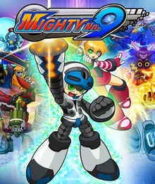
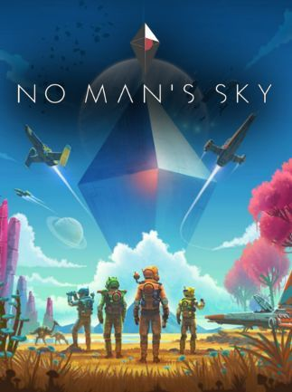

The Bad
The worst case scenario for a game must be when a studio or game has no prior trust built up and releases in an unsatisfying, seemingly incomplete state. The most clear and disastrous example in recent times would be Mighty No. 9. Not only was this the first game in its franchise, but it also had lots of hype from its crowdfunding campaign.
When the game came out and started to break Wii U consoles on day one while also ruining PR with the lead designer Keiji Inafune translated as saying “it’s better than nothing,” consumer trust was bound to be broken.[1]
No Man’s Sky is a similar example, with dozens of promises to the players being broken on launch. The primary difference between No Man’s Sky and Mighty No. 9 is that, while both launched as unpolished, incomplete games, No Man’s Sky made plenty of free updates to improve the game to a point where it resembles what was promised and is actually, itself, enjoyable.[2]
However, the mere existence of news articles trying to persuade people of the game’s reformed nature shows how poor the relations between players and developers had been, and how much trust had been lost by No Man’s Sky’s launch alone.
Even games with a large following aren't entirely safe. As an example, at launch, Fallout 76 was missing many core pieces to its experience, including NPCs, polished textures, bug fixing, etc.[3] This caused it to flop financially and lost a lot of player trust, in the words of Eric Kain from Forbes, becoming “the worst-reviewed AAA game of the year, and one of the worst-reviewed AAA games in recent memory, and certainly of this console generation. Ouch.”[3]